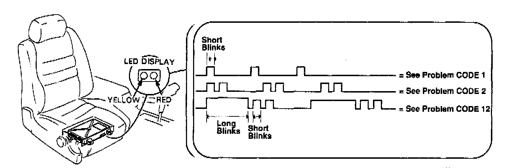
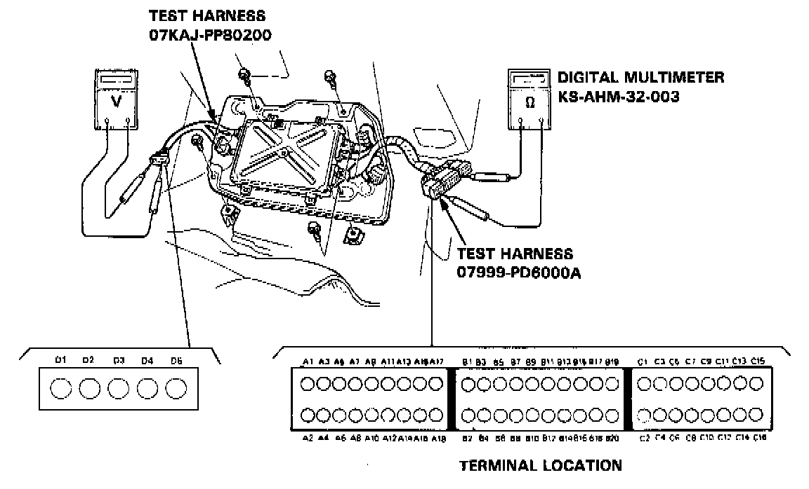
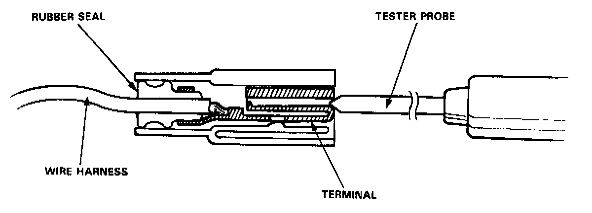
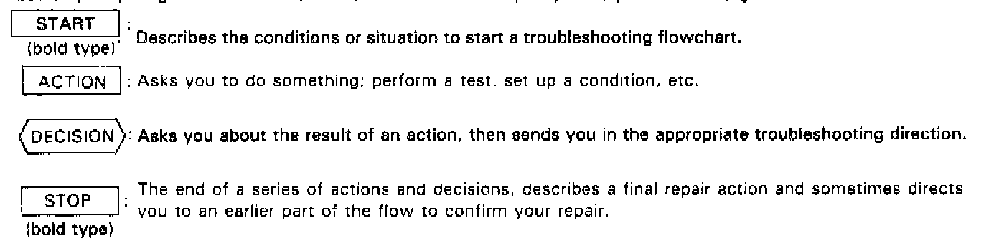

Troubleshooting Procedures

When the Check Engine warning light has been reported on, turn the ignition ON, pull down the inspection window from under the passenger seat and observe the LED on the top of the ECU. The Red LED indicates a system failure code by blinking frequency.
(The Yellow LED is for idle speed adjustment and is not related to the following troubleshooting codes)

Trouble Codes

If the inspection for a particular failure code requires the PGM-FI test harness, remove the front passenger seat and connect the PGM-FI test harness and multimeter as shown. Then check the system according to the procedure described for the appropriate code(s).

CAUTION:
- Puncturing the insulation on a wire can cause poor or intermittent electrical connections.
- For testing at connectors other than the system checker harness, bring the tester probe into contact with the terminal from the connector side of wire harness connectors in the engine compartment. For female connectors, just touch lightly with the tester probe and do not insert the probe.

A flow chart is designed to be used from start to final repair. It's like a map showing you the shortest distance. But beware; if you go off the "map" anywhere but a "stop" symbol, you can easily get lost.
NOTE:
- The term "Intermittent Failure" is used several times in these charts. It simply means a system may have had a failure, but it checks out OK through all your tests.
You may need to road test the car to reproduce the failure or if the problem was a loose connection, you may have unknowingly solved it while doing the tests.
In any event, even if the warning light on the dash does not come on check for poor connections or loose wires at all connectors related to the circuit that you are troubleshooting.
- "Open" and "Short" are common electrical terms. An open is a break in a wire or at a connection. A short is an accidental connection of a wire to ground.
In simple electronics, this usually means something won't work at all. In complex electronics like electronic control units, this can sometimes mean something works, but not the way it's supposed to
- If the electrical readings are not as specified when using the PGM-FI test harness, check the test harness connections before proceeding.